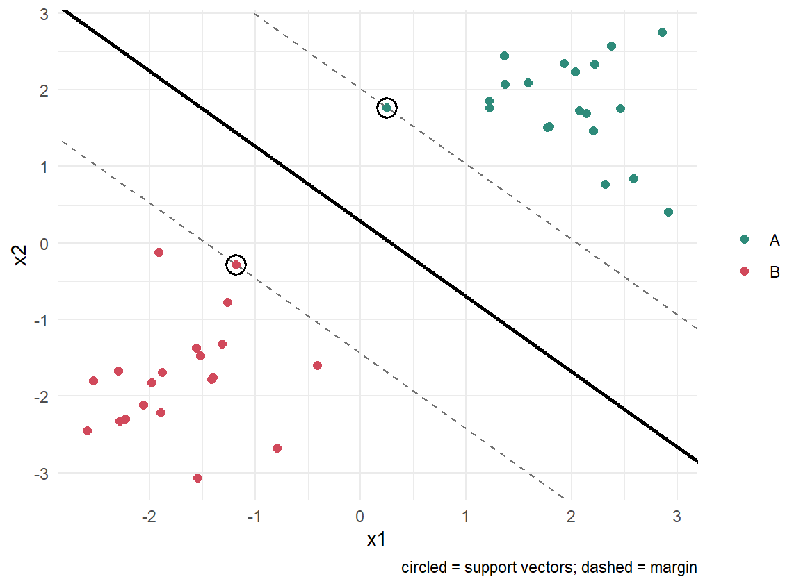
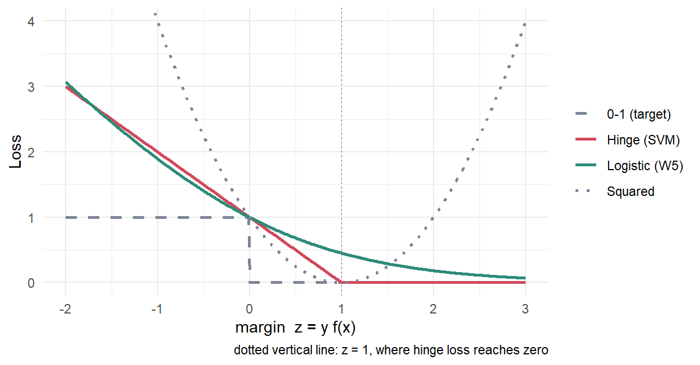
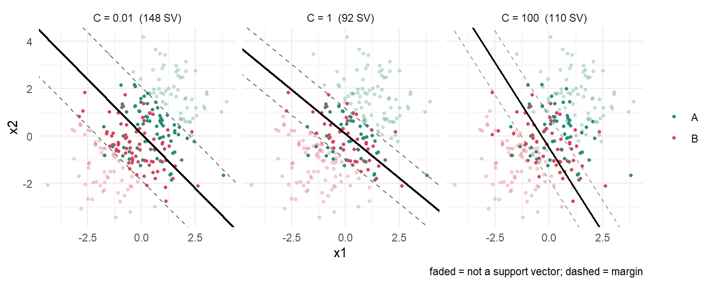
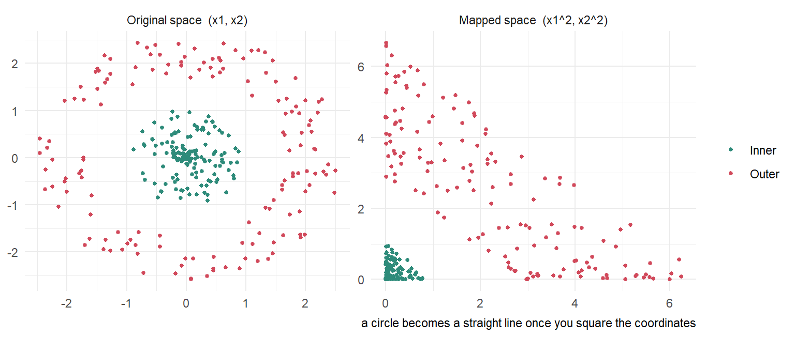
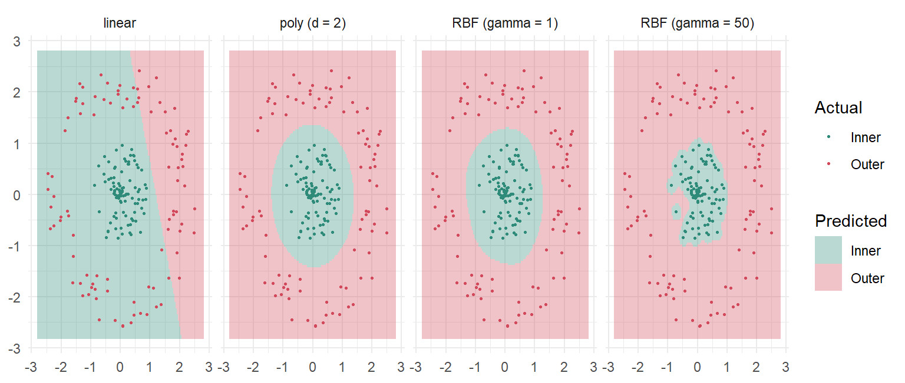
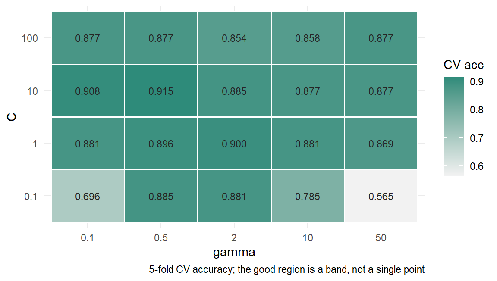
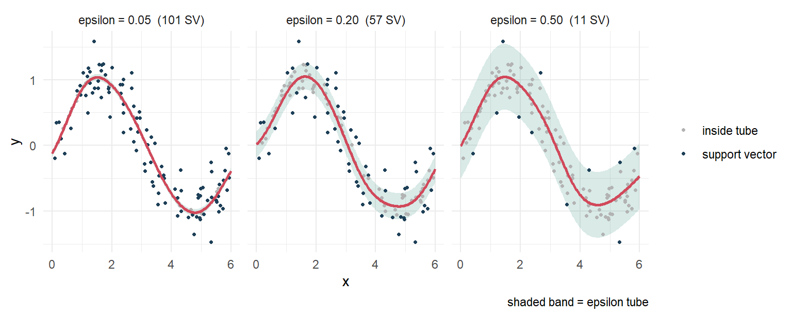

# kernel 행렬
kern <- function(A, B, type = "linear", gamma = 1, degree = 3, coef0 = 1) {
if (type == "linear") return(A %*% t(B))
if (type == "poly") return((gamma * (A %*% t(B)) + coef0)^degree)
sq <- outer(rowSums(A^2), rowSums(B^2), "+") - 2 * (A %*% t(B)) # ||a-b||^2
exp(-gamma * pmax(sq, 0))
}
# dual 좌표상승법: alpha_i 하나씩 [0, C] 안에서 최적화
svm_fit <- function(X, y, C = 1, type = "linear", gamma = 1, degree = 3,
iters = 200, tol = 1e-7) {
n <- nrow(X)
K <- kern(X, X, type, gamma, degree) + 1 # +1 로 bias 흡수 -> 등식제약 제거
Q <- K * outer(y, y); d <- diag(Q)
a <- numeric(n); f <- numeric(n) # f = Q %*% a 를 증분 갱신
for (it in seq_len(iters)) {
delta <- 0
for (i in seq_len(n)) {
new <- min(max(a[i] + (1 - f[i]) / d[i], 0), C) # 닫힌 해 + 상자 투영
if (new != a[i]) {
f <- f + Q[, i] * (new - a[i]); delta <- delta + abs(new - a[i]); a[i] <- new
}
}
if (delta < tol) break
}
list(X = X, y = y, a = a, C = C, type = type, gamma = gamma, degree = degree, iters = it)
}
# 결정함수 f(x) = sum_i alpha_i y_i K(x_i, x)
svm_dec <- function(m, Xn)
as.vector((kern(Xn, m$X, m$type, m$gamma, m$degree) + 1) %*% (m$a * m$y))
acc <- function(m, X, y) mean(sign(svm_dec(m, X)) == y)W10. SVM과 Kernel Methods
Maximum margin, dual과 KKT, soft margin, kernel trick, SVR
🎯 Learning objectives
- margin의 기하학적 의미를 설명하고 왜 최대화하는지 말할 수 있다
- dual 문제와 KKT 조건에서 support vector의 희소성이 나오는 과정을 설명할 수 있다
- soft margin의 \(C\) 가 W6의 정규화 강도와 같은 것임을 설명할 수 있다
- hinge loss를 log loss·squared loss와 비교할 수 있다
- kernel trick이 무엇을 절약하는지 설명하고 kernel을 상황에 맞게 고를 수 있다
- \(C\) 와 \(\gamma\) 를 교차검증으로 튜닝하고 과적합 신호를 읽을 수 있다
🤔 두 class를 완벽히 나누는 직선이 무한히 많다면, 그중 어느 것을 골라야 할까?
1. Maximum margin 📏
1) 무한히 많은 경계 중에서
- 선형 분리가 가능하면 두 class를 나누는 초평면은 무한히 많습니다
- W5의 로지스틱 회귀는 그중 하나를 고르지만, “왜 그것인가”에 대한 기하학적 이유는 없습니다
- SVM의 답 — 양쪽 class에서 가장 멀리 떨어진 것. 가장 안전한 경계
2) Margin의 기하
초평면을 \(\mathbf{w}^{\mathsf{T}}\mathbf{x} + b = 0\) 이라 하면, 점 \(\mathbf{x}\) 에서 초평면까지의 거리는
\[r = \frac{|\mathbf{w}^{\mathsf{T}}\mathbf{x} + b|}{\|\mathbf{w}\|}\]
스케일을 고정해 가장 가까운 점에서 \(|\mathbf{w}^{\mathsf{T}}\mathbf{x}+b| = 1\) 이 되게 두면(정규화된 초평면), 두 class 사이의 폭은
\[\gamma = \frac{2}{\|\mathbf{w}\|}\]
- margin을 최대화 = \(\|\mathbf{w}\|\) 를 최소화
- \(\mathbf{w}^{\mathsf{T}}\mathbf{x}+b = \pm 1\) 위에 놓인 점들이 support vector
3) 최적화 문제
\[\min_{\mathbf{w},b} \; \frac{1}{2}\|\mathbf{w}\|^2 \quad \text{s.t.} \quad y_i(\mathbf{w}^{\mathsf{T}}\mathbf{x}_i + b) \ge 1 \;\; \forall i\]
- 목적함수가 볼록 이차식, 제약이 선형 → 볼록 이차계획법(QP). 국소 최적해가 없습니다
- W5의 gradient descent와 달리 유일한 전역해가 보장됩니다
2. Dual problem과 KKT 🔑
1) Lagrangian에서 dual로
제약마다 승수 \(\alpha_i \ge 0\) 을 붙여 Lagrangian을 세우고 \(\mathbf{w}, b\) 로 미분해 0으로 두면
\[\mathbf{w} = \sum_i \alpha_i y_i \mathbf{x}_i, \qquad \sum_i \alpha_i y_i = 0\]
이를 대입하면 dual 문제가 나옵니다.
\[\max_{\boldsymbol{\alpha}} \; \sum_i \alpha_i - \frac{1}{2}\sum_i\sum_j \alpha_i \alpha_j y_i y_j \,\mathbf{x}_i^{\mathsf{T}}\mathbf{x}_j \quad \text{s.t.} \quad \alpha_i \ge 0, \;\; \sum_i \alpha_i y_i = 0\]
- ✅ 데이터가 내적 \(\mathbf{x}_i^{\mathsf{T}}\mathbf{x}_j\) 형태로만 등장합니다. 4절 kernel trick이 가능한 이유가 전부 여기에 있습니다
- 변수 개수가 feature 수 \(d\) 가 아니라 샘플 수 \(n\) 이 됩니다 → \(d \gg n\) 인 오믹스에 유리
2) KKT 조건이 말해주는 것
최적해에서는 다음이 성립합니다.
\[\alpha_i \ge 0, \qquad y_i f(\mathbf{x}_i) - 1 \ge 0, \qquad \alpha_i\left(y_i f(\mathbf{x}_i) - 1\right) = 0\]
세 번째(complementary slackness)가 핵심입니다.
- \(y_i f(\mathbf{x}_i) > 1\) (margin 안쪽에서 멀리 떨어진 점) → \(\alpha_i = 0\)
- \(\alpha_i > 0\) 이려면 반드시 \(y_i f(\mathbf{x}_i) = 1\), 즉 margin 위에 있어야 함
✅ 따라서 해는 희소합니다. \(\mathbf{w} = \sum_i \alpha_i y_i \mathbf{x}_i\) 에서 support vector만 기여하고, 나머지 점은 버려도 됩니다.
3) 구현 — dual 좌표상승법
e1071, kernlab은 SMO 알고리즘을 쓰지만, 등식 제약만 없애면 좌표상승법으로 몇 줄이면 됩니다. 편향 \(b\) 를 kernel에 상수 1을 더해 흡수하면 \(\sum_i \alpha_i y_i = 0\) 제약이 사라집니다.
왜 직접 구현하나
e1071::svm() 한 줄이면 되지만, KKT가 만드는 희소성은 alpha 벡터를 직접 봐야 체감됩니다. 실무에서는 e1071::svm(y ~ ., data, kernel = "radial", cost = 10, gamma = 0.5) 또는 kernlab::ksvm() 을 쓰세요. 대용량이면 LiblineaR(선형 전용, 훨씬 빠름)이 답입니다.
4) 🧪 실습: support vector만 남기고 다 버려도 같은 경계
library(ggplot2)
set.seed(1)
X1 <- rbind(matrix(rnorm(40, 1.8, .7), 20, 2),
matrix(rnorm(40, -1.8, .7), 20, 2))
y1 <- c(rep(1, 20), rep(-1, 20))
m1 <- svm_fit(X1, y1, C = 100)
sv <- m1$a > 1e-6
w <- colSums(m1$a * y1 * X1); b <- sum(m1$a * y1)
d1 <- data.frame(x1 = X1[,1], x2 = X1[,2],
class = factor(ifelse(y1 > 0, "A", "B")), sv = sv)
ggplot(d1, aes(x1, x2)) +
geom_abline(slope = -w[1]/w[2], intercept = -b/w[2], linewidth = .9) +
geom_abline(slope = -w[1]/w[2], intercept = (1-b)/w[2], linetype = 2, colour = "grey45") +
geom_abline(slope = -w[1]/w[2], intercept = (-1-b)/w[2], linetype = 2, colour = "grey45") +
geom_point(aes(colour = class), size = 1.9) +
geom_point(data = subset(d1, sv), shape = 21, size = 4.4, stroke = 1, colour = "black") +
scale_colour_manual(values = c(A = "#2e8b7a", B = "#d1495b")) +
labs(colour = NULL, caption = "circled = support vectors; dashed = margin") +
theme_minimal()
# support vector 2개만으로 다시 학습해본다
m2 <- svm_fit(X1[sv, , drop = FALSE], y1[sv], C = 100)
w2 <- colSums(m2$a * y1[sv] * X1[sv, , drop = FALSE])
data.frame(
fitted_on = c("All 40 points", "Support vectors only"),
n_used = c(nrow(X1), sum(sv)),
w1 = round(c(w[1], w2[1]), 4),
w2 = round(c(w[2], w2[2]), 4),
margin = round(c(2/sqrt(sum(w^2)), 2/sqrt(sum(w2^2))), 3)
) fitted_on n_used w1 w2 margin
1 All 40 points 40 0.5694 0.58 2.461
2 Support vectors only 2 0.5694 0.58 2.461- 40개 점 중 support vector는 2개뿐입니다
- 그 2개만으로 다시 학습해도 \(\mathbf{w}\) 가 소수점 넷째 자리까지 동일합니다
- ✅ SVM은 경계 근처의 몇 점으로만 결정됩니다. 멀리 있는 점을 아무리 옮겨도 경계는 안 움직입니다
- ⚠️ 뒤집어 말하면 경계 근처의 이상치 하나에 취약합니다 → 3절 soft margin
3. Soft margin ⚖️
1) 완벽히 나눌 수 없을 때
- 실제 데이터는 겹칩니다. 제약 \(y_i f(\mathbf{x}_i) \ge 1\) 을 모두 만족하는 해가 없을 수 있음
- 각 샘플에 slack \(\xi_i \ge 0\) 을 허용하고, 그 합에 벌점을 매깁니다
\[\min_{\mathbf{w},b,\boldsymbol{\xi}} \; \frac{1}{2}\|\mathbf{w}\|^2 + C\sum_{i=1}^{n}\xi_i \quad \text{s.t.} \quad y_i(\mathbf{w}^{\mathsf{T}}\mathbf{x}_i + b) \ge 1 - \xi_i, \;\; \xi_i \ge 0\]
- dual은 거의 그대로이고, 제약만 \(0 \le \alpha_i \le \boldsymbol{C}\) 로 상자(box) 가 됩니다
- KKT로 읽으면 — \(\alpha_i = 0\) 은 margin 밖, \(0 < \alpha_i < C\) 는 margin 위, \(\alpha_i = C\) 는 margin을 침범한 점
2) Hinge loss
\(\xi_i = \max(0, 1 - y_i f(\mathbf{x}_i))\) 를 대입하면 제약이 사라지고, 목적함수는 이렇게 됩니다.
\[\min_{\mathbf{w},b} \; \underbrace{\sum_{i=1}^{n}\max\!\left(0,\, 1 - y_i f(\mathbf{x}_i)\right)}_{\text{hinge loss}} \;+\; \frac{1}{2C}\|\mathbf{w}\|^2\]
W6이 다시 나타났습니다
이건 hinge loss에 L2 정규화를 건 것입니다. W6의 Ridge가 \(\text{손실} + \lambda\|\mathbf{w}\|^2\) 였던 것과 정확히 같은 구조이고,
\[C \;\leftrightarrow\; \frac{1}{\lambda}\]
- \(C\) 작음 = 정규화 강함 → margin 넓음, 오분류 허용, 단순한 경계
- \(C\) 큼 = 정규화 약함 → margin 좁음, 학습 데이터에 충실, 과적합 위험
“SVM의 \(C\) 를 튜닝한다”는 말은 “Ridge의 \(\lambda\) 를 튜닝한다”는 말과 같습니다.
3) 🧪 실습: 손실함수 네 개를 겹쳐 보기
mgn <- seq(-2, 3, length.out = 400) # z = y * f(x)
loss <- rbind(
data.frame(z = mgn, L = as.numeric(mgn <= 0), kind = "0-1 (target)"),
data.frame(z = mgn, L = pmax(0, 1 - mgn), kind = "Hinge (SVM)"),
data.frame(z = mgn, L = log(1 + exp(-mgn)) / log(2), kind = "Logistic (W5)"),
data.frame(z = mgn, L = (1 - mgn)^2, kind = "Squared")
)
loss$kind <- factor(loss$kind,
levels = c("0-1 (target)", "Hinge (SVM)", "Logistic (W5)", "Squared"))
ggplot(loss, aes(z, L, colour = kind, linetype = kind)) +
geom_line(linewidth = .9) +
geom_vline(xintercept = 1, linetype = 3, colour = "grey55") +
coord_cartesian(ylim = c(0, 4)) +
scale_colour_manual(values = c("#7d8597", "#d1495b", "#2e8b7a", "#7d8597")) +
scale_linetype_manual(values = c(2, 1, 1, 3)) +
labs(x = "margin z = y f(x)", y = "Loss", colour = NULL, linetype = NULL,
caption = "dotted vertical line: z = 1, where hinge loss reaches zero") +
theme_minimal()
- Hinge — \(z \ge 1\) 이면 손실이 정확히 0. 이 평평한 구간이 곧 \(\alpha_i = 0\), 즉 희소성의 출처입니다
- Logistic — 아무리 잘 맞혀도 손실이 0이 되지 않음 → 모든 점이 계수에 기여 → 희소하지 않음. 대신 확률을 줍니다
- Squared — 너무 잘 맞힌 점(\(z > 1\))에도 벌점을 줍니다. 이상치에 민감해 분류에는 부적합 (W5에서 본 그대로)
- 셋 다 0-1 손실의 볼록 상계입니다. 볼록으로 바꿔야 풀 수 있기 때문
4) 🧪 실습: C를 바꾸면 margin이 어떻게 변하나
set.seed(11)
n2 <- 400
X2 <- rbind(matrix(rnorm(n2, 1.0, 1.2), n2/2, 2),
matrix(rnorm(n2, -1.0, 1.2), n2/2, 2))
y2 <- c(rep(1, n2/2), rep(-1, n2/2))
set.seed(12); i2 <- sample(n2, 260)
tr2 <- X2[i2, ]; ytr2 <- y2[i2]; te2 <- X2[-i2, ]; yte2 <- y2[-i2]
Cs <- c(0.01, 0.1, 1, 10, 100)
fits <- lapply(Cs, function(Cv) svm_fit(tr2, ytr2, C = Cv, iters = 300))
do.call(rbind, Map(function(m, Cv) {
w <- colSums(m$a * ytr2 * tr2)
data.frame(C = Cv, n_SV = sum(m$a > 1e-6), margin = round(2/sqrt(sum(w^2)), 3),
train_acc = round(acc(m, tr2, ytr2), 3),
test_acc = round(acc(m, te2, yte2), 3))
}, fits, Cs)) C n_SV margin train_acc test_acc
1 1e-02 148 2.906 0.854 0.907
2 1e-01 100 1.946 0.858 0.886
3 1e+00 92 1.730 0.858 0.886
4 1e+01 98 1.620 0.850 0.886
5 1e+02 110 1.544 0.846 0.893pick <- c(1, 3, 5) # C = 0.01, 1, 100
panels <- do.call(rbind, lapply(pick, function(k) {
m <- fits[[k]]; w <- colSums(m$a * ytr2 * tr2); b <- sum(m$a * ytr2)
data.frame(x1 = tr2[,1], x2 = tr2[,2],
class = factor(ifelse(ytr2 > 0, "A", "B")),
sv = m$a > 1e-6,
slope = -w[1]/w[2], int0 = -b/w[2],
int1 = (1-b)/w[2], int2 = (-1-b)/w[2],
panel = sprintf("C = %g (%d SV)", Cs[k], sum(m$a > 1e-6)))
}))
lines_df <- unique(panels[, c("slope","int0","int1","int2","panel")])
ggplot(panels, aes(x1, x2)) +
geom_point(aes(colour = class, alpha = sv), size = 1.1) +
geom_abline(data = lines_df, aes(slope = slope, intercept = int0), linewidth = .8) +
geom_abline(data = lines_df, aes(slope = slope, intercept = int1),
linetype = 2, colour = "grey45") +
geom_abline(data = lines_df, aes(slope = slope, intercept = int2),
linetype = 2, colour = "grey45") +
facet_wrap(~ panel) +
scale_colour_manual(values = c(A = "#2e8b7a", B = "#d1495b")) +
scale_alpha_manual(values = c(`FALSE` = .25, `TRUE` = 1), guide = "none") +
coord_cartesian(ylim = range(tr2[,2])) +
labs(colour = NULL, caption = "faded = not a support vector; dashed = margin") +
theme_minimal()
- margin은 \(C\) 에 대해 단조 감소합니다 — 2.906 → 1.544. 정규화를 풀수록 경계가 데이터에 바짝 붙습니다
- \(C = 0.01\) — support vector 148개(학습 260개의 57%). 넓은 margin 안으로 많은 점이 들어옵니다
- support vector 수는 단조가 아닙니다 — \(C = 1\) 에서 92개로 최소였다가 \(C = 100\) 에서 110개로 다시 늘어납니다. \(C\) 가 작으면 margin이 넓어서, 크면 좁은 margin을 정확히 맞추느라 점이 걸립니다
- test 정확도는 \(C = 0.01\) 에서 0.907로 가장 높습니다 (train은 0.854로 가장 낮은데도)
- ✅ 겹치는 데이터에서는 넓은 margin이 이깁니다. \(C\) 를 키우는 것이 곧 성능이 아닙니다
4. Kernel trick 🪄
1) 아이디어
- 원래 공간에서 선형 분리가 안 되면, 더 높은 차원으로 보내면 분리될 수 있습니다
- 문제 — 사상 \(\phi(\mathbf{x})\) 의 차원이 폭발합니다 (\(d\) 차원의 \(p\) 차 다항식은 \(\binom{d+p}{p}\) 차원)
- 그런데 dual에는 내적만 나옵니다. 그러면 \(\phi\) 를 만들지 말고 내적만 계산하면 됩니다
\[\kappa(\mathbf{x}_i, \mathbf{x}_j) = \phi(\mathbf{x}_i)^{\mathsf{T}}\phi(\mathbf{x}_j)\]
- 이 함수 \(\kappa\) 가 kernel입니다. \(\phi\) 는 존재하기만 하면 되고, 쓸 필요가 없습니다
- 어떤 함수가 kernel이 될 수 있는가 → Mercer 정리: kernel 행렬이 언제나 positive semi-definite면 됨
2) 🧪 실습: \(\phi\) 없이 내적만
2차 다항식 kernel \(\kappa(\mathbf{x},\mathbf{z}) = (\mathbf{x}^{\mathsf{T}}\mathbf{z})^2\) 는 사상 \(\phi(\mathbf{x}) = (x_1^2,\ \sqrt{2}x_1x_2,\ x_2^2)\) 의 내적과 정확히 같습니다.
set.seed(2)
N <- 300
th <- runif(N, 0, 2*pi)
r <- c(runif(N/2, 0, 1), runif(N/2, 1.7, 2.6)) # 동심원 두 개
Xc <- cbind(r*cos(th), r*sin(th))
yc <- c(rep(1, N/2), rep(-1, N/2))
phi <- function(Z) cbind(Z[,1]^2, sqrt(2)*Z[,1]*Z[,2], Z[,2]^2)
data.frame(
check = "phi(x)'phi(z) == (x'z)^2",
identical_to_1e8 = isTRUE(all.equal(phi(Xc[1:5,]) %*% t(phi(Xc[6:10,])),
(Xc[1:5,] %*% t(Xc[6:10,]))^2))
) check identical_to_1e8
1 phi(x)'phi(z) == (x'z)^2 TRUEmapped <- data.frame(
a = c(Xc[,1], phi(Xc)[,1]),
b = c(Xc[,2], phi(Xc)[,3]),
class = factor(rep(ifelse(yc > 0, "Inner", "Outer"), 2)),
panel = rep(c("Original space (x1, x2)", "Mapped space (x1^2, x2^2)"), each = N)
)
mapped$panel <- factor(mapped$panel,
levels = c("Original space (x1, x2)", "Mapped space (x1^2, x2^2)"))
ggplot(mapped, aes(a, b, colour = class)) +
geom_point(size = 1.1) +
facet_wrap(~ panel, scales = "free") +
scale_colour_manual(values = c(Inner = "#2e8b7a", Outer = "#d1495b")) +
labs(x = NULL, y = NULL, colour = NULL,
caption = "a circle becomes a straight line once you square the coordinates") +
theme_minimal()
- 원래 공간에서는 직선으로 절대 못 나눕니다
- \((x_1^2,\, x_2^2)\) 로 보내면 \(x_1^2 + x_2^2 = c\), 즉 직선이 됩니다
- ✅ kernel trick은 이 변환을 머릿속에만 두고 계산은 원래 공간의 내적으로 끝냅니다
3) 대표적인 kernel
| Kernel | \(\kappa(\mathbf{x},\mathbf{z})\) | 초매개변수 | 언제 |
|---|---|---|---|
| Linear | \(\mathbf{x}^{\mathsf{T}}\mathbf{z}\) | — | \(d \gg n\) (오믹스, 텍스트). 기본 선택 |
| Polynomial | \((\gamma\,\mathbf{x}^{\mathsf{T}}\mathbf{z} + c_0)^p\) | \(\gamma, c_0, p\) | 상호작용 차수를 알 때 |
| RBF (Gaussian) | \(\exp(-\gamma\|\mathbf{x}-\mathbf{z}\|^2)\) | \(\gamma\) | 사전 지식이 없을 때의 기본값 |
| Sigmoid | \(\tanh(\gamma\,\mathbf{x}^{\mathsf{T}}\mathbf{z} + c_0)\) | \(\gamma, c_0\) | 거의 안 씀 (PSD가 아닐 수 있음) |
- \(\gamma\) 의 의미 — RBF에서 한 점의 영향이 미치는 범위의 역수. \(\gamma\) 가 크면 좁고 뾰족, 작으면 넓고 부드러움
- kernel끼리 더하거나 곱해도 kernel입니다 → 데이터 종류별 kernel을 합치는 multiple kernel learning
4) 🧪 실습: kernel을 바꾸면
set.seed(4)
ic <- sample(N, 200)
trc <- Xc[ic, ]; ytrc <- yc[ic]; tec <- Xc[-ic, ]; ytec <- yc[-ic]
specs <- list(list("linear", 1, 3), list("poly", 0.5, 2),
list("poly", 0.5, 3), list("rbf", 1, 3))
do.call(rbind, lapply(specs, function(s) {
m <- svm_fit(trc, ytrc, C = 10, type = s[[1]], gamma = s[[2]],
degree = s[[3]], iters = 300)
data.frame(kernel = if (s[[1]] == "poly") sprintf("poly (d = %d)", s[[3]]) else s[[1]],
n_SV = sum(m$a > 1e-6),
train_acc = round(acc(m, trc, ytrc), 3),
test_acc = round(acc(m, tec, ytec), 3))
})) kernel n_SV train_acc test_acc
1 linear 195 0.69 0.68
2 poly (d = 2) 5 1.00 1.00
3 poly (d = 3) 10 1.00 1.00
4 rbf 23 1.00 1.00grid <- expand.grid(x1 = seq(-2.8, 2.8, length.out = 140),
x2 = seq(-2.8, 2.8, length.out = 140))
show <- list(list("linear", 1, 3, "linear"), list("poly", 0.5, 2, "poly (d = 2)"),
list("rbf", 1, 3, "RBF (gamma = 1)"), list("rbf", 50, 3, "RBF (gamma = 50)"))
regions <- do.call(rbind, lapply(show, function(s) {
m <- svm_fit(trc, ytrc, C = 10, type = s[[1]], gamma = s[[2]],
degree = s[[3]], iters = 300)
g <- grid; g$pred <- factor(ifelse(svm_dec(m, as.matrix(grid)) > 0, "Inner", "Outer"))
g$panel <- s[[4]]; g
}))
regions$panel <- factor(regions$panel, levels = sapply(show, `[[`, 4))
ggplot(regions, aes(x1, x2)) +
geom_raster(aes(fill = pred), alpha = .33) +
geom_point(data = data.frame(x1 = trc[,1], x2 = trc[,2],
class = factor(ifelse(ytrc > 0, "Inner", "Outer"))),
aes(colour = class), size = .6) +
facet_wrap(~ panel, nrow = 1) +
scale_fill_manual(values = c(Inner = "#2e8b7a", Outer = "#d1495b")) +
scale_colour_manual(values = c(Inner = "#2e8b7a", Outer = "#d1495b")) +
labs(fill = "Predicted", colour = "Actual", x = NULL, y = NULL) +
theme_minimal()
- linear — test 0.680. support vector가 195/200, 즉 거의 전부. 못 맞히니 다 margin 안으로 들어옵니다
- poly (d = 2) — test 1.000을 support vector 5개로. 데이터의 진짜 구조가 2차식이니 당연합니다
- RBF (\(\gamma = 1\)) — 1.000, support vector 23개. 구조를 몰라도 맞힙니다
- RBF (\(\gamma = 50\)) — 결정 영역이 inner 점들에 바짝 달라붙습니다. 조금만 떨어져도 Outer로 판정하는, 여백이 사라진 전형적인 과적합 신호
- ✅ support vector 수는 복잡도의 지표입니다. 데이터의 절반이 support vector면 뭔가 잘못된 것
5) 🧪 실습: \(C\)–\(\gamma\) 격자 탐색
RBF SVM의 두 초매개변수는 함께 움직입니다. 따로 튜닝하면 안 됩니다.
set.seed(21)
N6 <- 400
th6 <- runif(N6, 0, 2*pi)
r6 <- c(runif(N6/2, 0, 1.35), runif(N6/2, 1.05, 2.6)) # 반지름이 겹친다
X6 <- cbind(r6*cos(th6), r6*sin(th6)); y6 <- c(rep(1, N6/2), rep(-1, N6/2))
set.seed(22); i6 <- sample(N6, 260)
tr6 <- X6[i6, ]; ytr6 <- y6[i6]; te6 <- X6[-i6, ]; yte6 <- y6[-i6]
set.seed(23); folds <- sample(rep(1:5, length.out = nrow(tr6)))
Cv <- c(0.1, 1, 10, 100); Gv <- c(0.1, 0.5, 2, 10, 50)
gr <- expand.grid(C = Cv, gamma = Gv)
gr$cv <- mapply(function(cc, gg) mean(sapply(1:5, function(k) {
m <- svm_fit(tr6[folds != k, ], ytr6[folds != k], C = cc,
type = "rbf", gamma = gg, iters = 150)
acc(m, tr6[folds == k, ], ytr6[folds == k])
})), gr$C, gr$gamma)
matrix(round(gr$cv, 3), nrow = length(Cv),
dimnames = list(C = Cv, gamma = Gv)) gamma
C 0.1 0.5 2 10 50
0.1 0.696 0.885 0.881 0.785 0.565
1 0.881 0.896 0.900 0.881 0.869
10 0.908 0.915 0.885 0.877 0.877
100 0.877 0.877 0.854 0.858 0.877ggplot(gr, aes(factor(gamma), factor(C), fill = cv)) +
geom_tile(colour = "white", linewidth = .6) +
geom_text(aes(label = sprintf("%.3f", cv)), size = 3, colour = "grey15") +
scale_fill_gradient(low = "#f2f2f2", high = "#2e8b7a") +
labs(x = "gamma", y = "C", fill = "CV acc",
caption = "5-fold CV accuracy; the good region is a band, not a single point") +
theme_minimal()
best <- gr[which.max(gr$cv), ]
m_best <- svm_fit(tr6, ytr6, C = best$C, type = "rbf", gamma = best$gamma, iters = 300)
m_over <- svm_fit(tr6, ytr6, C = 100, type = "rbf", gamma = 50, iters = 300)
data.frame(
model = c(sprintf("Tuned (C = %g, gamma = %g)", best$C, best$gamma),
"Extreme corner (C = 100, gamma = 50)"),
cv_acc = round(c(best$cv, gr$cv[gr$C == 100 & gr$gamma == 50]), 3),
train_acc = round(c(acc(m_best, tr6, ytr6), acc(m_over, tr6, ytr6)), 3),
test_acc = round(c(acc(m_best, te6, yte6), acc(m_over, te6, yte6)), 3),
n_SV = c(sum(m_best$a > 1e-6), sum(m_over$a > 1e-6))
) model cv_acc train_acc test_acc n_SV
1 Tuned (C = 10, gamma = 0.5) 0.915 0.912 0.879 63
2 Extreme corner (C = 100, gamma = 50) 0.877 1.000 0.886 230- 최적은 \(C = 10,\ \gamma = 0.5\) 로 CV 0.915. 좋은 영역은 점이 아니라 넓은 띠입니다 — \(C\) 와 \(\gamma\) 가 서로를 보완하기 때문에 조합으로 봐야 합니다
- 극단 모서리(\(C=100,\ \gamma=50\))는 train 1.000, support vector 230/260 — 사실상 암기입니다
- 그런데 그 모서리의 test는 0.886으로 튜닝 모델(0.879)보다 높게 나왔습니다
- ⚠️ test set 하나(140개)의 숫자는 이 정도로 흔들립니다. CV는 0.877 vs 0.915로 제대로 구분했습니다 — W3에서 배운 그대로, 판단은 CV로 하고 test는 마지막에 한 번만 봅니다
6) Kernel 선택 기준
- \(d \gg n\) 이면 linear부터. 오믹스는 대개 이미 고차원이라 더 올릴 이유가 없습니다
- \(n\) 이 크고 \(d\) 가 작으면 RBF
- 반드시 스케일링하고 시작 — RBF의 \(\|\mathbf{x}-\mathbf{z}\|^2\) 는 단위에 그대로 휘둘립니다
- \(\gamma\) 의 출발점은 \(1/(d \cdot \mathrm{Var}(X))\) (
e1071,sklearn의scale기본값) - 격자는 log 간격으로 — \(C \in \{10^{-2}, \ldots, 10^{3}\}\), \(\gamma \in \{10^{-3}, \ldots, 10^{1}\}\)
5. Support Vector Regression 📉
1) \(\varepsilon\)-insensitive loss
분류에서 hinge loss의 평평한 구간이 희소성을 만들었습니다. 회귀에서도 같은 장치를 씁니다.
\[L_\varepsilon(y, f(\mathbf{x})) = \max\left(0,\ |y - f(\mathbf{x})| - \varepsilon\right)\]
- 예측이 \(\varepsilon\) 튜브 안에 있으면 손실이 0 → 그 점은 support vector가 아님
- 튜브 밖의 점만 해에 기여합니다. W6의 Lasso처럼 soft-thresholding이 나옵니다
svr_fit <- function(X, y, C = 5, eps = 0.2, type = "rbf", gamma = 0.5,
iters = 400, tol = 1e-8) {
n <- nrow(X); K <- kern(X, X, type, gamma) + 1
d <- diag(K); b <- numeric(n); f <- numeric(n) # f = K %*% b
for (it in seq_len(iters)) {
delta <- 0
for (i in seq_len(n)) {
g <- y[i] - f[i] + d[i] * b[i]
st <- sign(g) * max(abs(g) - eps, 0) # soft-threshold: 튜브 안이면 0
new <- min(max(st / d[i], -C), C)
if (new != b[i]) {
f <- f + K[, i] * (new - b[i]); delta <- delta + abs(new - b[i]); b[i] <- new
}
}
if (delta < tol) break
}
list(X = X, b = b, C = C, eps = eps, type = type, gamma = gamma)
}
svr_pred <- function(m, Xn) as.vector((kern(Xn, m$X, m$type, m$gamma) + 1) %*% m$b)2) 🧪 실습: \(\varepsilon\) 를 키우면 support vector가 사라진다
set.seed(5)
nn <- 120
xs <- sort(runif(nn, 0, 6)); ys <- sin(xs) + rnorm(nn, 0, 0.25)
Xs <- matrix(xs, ncol = 1)
svrs <- lapply(c(0.05, 0.2, 0.5), function(e) svr_fit(Xs, ys, C = 5, eps = e))
do.call(rbind, lapply(svrs, function(m) {
fit <- svr_pred(m, Xs)
data.frame(epsilon = m$eps,
n_SV = sum(abs(m$b) > 1e-6),
inside_tube = round(mean(abs(fit - ys) <= m$eps + 1e-6), 3),
RMSE = round(sqrt(mean((fit - ys)^2)), 3))
})) epsilon n_SV inside_tube RMSE
1 0.05 101 0.192 0.249
2 0.20 57 0.600 0.248
3 0.50 11 0.950 0.252xg <- seq(0, 6, length.out = 300)
svr_long <- do.call(rbind, lapply(svrs, function(m) {
p <- svr_pred(m, matrix(xg, ncol = 1))
data.frame(x = xg, fit = p, lo = p - m$eps, hi = p + m$eps,
panel = sprintf("epsilon = %.2f (%d SV)", m$eps, sum(abs(m$b) > 1e-6)))
}))
pts <- do.call(rbind, lapply(svrs, function(m) {
data.frame(x = xs, y = ys, sv = abs(m$b) > 1e-6,
panel = sprintf("epsilon = %.2f (%d SV)", m$eps, sum(abs(m$b) > 1e-6)))
}))
lev <- unique(svr_long$panel)
svr_long$panel <- factor(svr_long$panel, lev); pts$panel <- factor(pts$panel, lev)
ggplot(svr_long, aes(x)) +
geom_ribbon(aes(ymin = lo, ymax = hi), fill = "#2e8b7a", alpha = .18) +
geom_point(data = pts, aes(x, y, colour = sv), size = .9) +
geom_line(aes(y = fit), linewidth = .9, colour = "#d1495b") +
facet_wrap(~ panel) +
scale_colour_manual(values = c(`FALSE` = "grey70", `TRUE` = "#1d3f57"),
labels = c("inside tube", "support vector")) +
labs(y = "y", colour = NULL, caption = "shaded band = epsilon tube") +
theme_minimal()
- \(\varepsilon = 0.05\) — 튜브가 좁아 101/120이 support vector. 사실상 전부입니다
- \(\varepsilon = 0.5\) — support vector 11개, 95%가 튜브 안. 그런데 RMSE는 0.249 → 0.252로 거의 그대로
- ✅ \(\varepsilon\) 는 정확도를 거의 잃지 않고 모델을 극적으로 가볍게 만듭니다
- \(\varepsilon\) 를 노이즈 수준(여기서는 0.25) 근처로 두는 것이 실무 감각입니다
6. 장단점과 실무 지침 ⚠️
1) 장점
- 소표본 고차원에 강함 — dual의 변수 수가 \(n\) 이라 \(d \gg n\) 에서 유리. 오믹스와 궁합이 좋음
- 전역 최적해 — 볼록 문제라 초기값·seed에 따라 답이 달라지지 않음 (W9의 트리와 정반대)
- 희소한 해 — support vector만 저장하면 됨
- kernel만 갈아 끼우면 구조화된 데이터(문자열, 그래프, 시퀀스)에도 그대로 적용
2) 단점과 대처
| 문제 | 내용 | 대처 |
|---|---|---|
| 확률을 안 줌 | \(f(\mathbf{x})\) 는 부호 있는 거리이지 확률이 아님 | Platt scaling — \(f(\mathbf{x})\) 에 로지스틱 적합 (W4의 보정). e1071은 probability = TRUE |
| 스케일 민감 | RBF의 거리와 선형의 내적 모두 단위에 휘둘림 | 필수 표준화. 반드시 fold 안에서 (W2) |
| \(n\) 에 대해 느림 | kernel 행렬이 \(n \times n\), 학습이 \(O(n^2 \sim n^3)\) | \(n > 10^5\) 면 linear SVM(LiblineaR) 또는 Nyström 근사 |
| 다중분류 없음 | 본질적으로 이진 분류기 | OvO (W6). e1071도 OvO |
| 해석 어려움 | RBF에서는 계수가 없음 | linear kernel이면 \(\mathbf{w}\) 를 볼 수 있음. 아니면 SHAP (W14) |
| 초매개변수 민감 | \(C\), \(\gamma\) 를 잘못 두면 무너짐 | log 격자 + nested CV (W3) |
⚠️ SVM을 논문에 쓸 때
- 스케일링을 fold 안에서 했는지 먼저 확인 — SVM에서 가장 흔한 누수
C와gamma는 반드시 nested CV로 — 같은 CV로 고르고 보고하면 낙관 편향 (W3)- support vector 비율을 보고할 것 — 절반을 넘으면 과적합이거나 kernel이 안 맞는 것
- 확률이 필요하면 Platt scaling 후 보정 곡선을 확인 (W4). SVM 점수를 그대로 확률처럼 쓰지 말 것
- \(d \gg n\) 오믹스에서는 linear kernel을 기본값으로 두고, RBF가 정말 나은지 검증할 것
Where this ends up
- kernel trick을 차원 축소에 재사용 → W13의 kernel PCA
- \(C \leftrightarrow 1/\lambda\) 의 정규화 관점 → W6
- Platt scaling과 보정 → W4
- OvO·OvR 다중분류 전략 → W6
- linear SVM의 \(\mathbf{w}\) 를 변수 중요도로 읽을 때의 함정 → W14
📝 Summary
- SVM은 무한히 많은 분리 초평면 중 margin \(2/\|\mathbf{w}\|\) 가 최대인 것을 고릅니다
- dual로 바꾸면 데이터가 내적으로만 등장하고, 변수 수가 \(d\) 가 아니라 \(n\) 이 됩니다
- KKT의 complementary slackness가 희소성을 만듭니다 — margin 밖의 점은 \(\alpha_i = 0\)
- 실습 — 40개 중 support vector는 2개, 그 2개만으로 다시 학습해도 \(\mathbf{w}\) 가 동일
- soft margin = hinge loss + L2 정규화, 그리고 \(C \leftrightarrow 1/\lambda\). W6이 그대로 돌아옵니다
- \(C\): 0.01 → 100 에서 margin 2.906 → 1.544, 그런데 test는 \(C\) 가 가장 작을 때 0.907로 최고
- hinge loss의 평평한 구간이 희소성의 출처. logistic은 희소하지 않은 대신 확률을 줍니다
- kernel trick — \(\phi\) 를 만들지 않고 내적만. \((\mathbf{x}^{\mathsf{T}}\mathbf{z})^2 = \phi(\mathbf{x})^{\mathsf{T}}\phi(\mathbf{z})\) 를 수치로 확인
- 동심원에서 linear 0.680 vs poly(d=2)는 support vector 5개로 1.000. kernel이 구조에 맞으면 극적으로 단순해집니다
- \(C\)–\(\gamma\) 격자의 좋은 영역은 점이 아니라 띠. 극단 모서리는 support vector 230/260의 암기
- SVR — \(\varepsilon\) 0.05 → 0.5 에서 support vector 101 → 11개, RMSE는 0.249 → 0.252로 거의 불변
- ⚠️ 스케일링 필수, 확률 없음, \(n\) 커지면 느림
🔑 Key terms
| 용어 | 정의 |
|---|---|
| Margin | 두 class 사이 폭 \(2/\|\mathbf{w}\|\). 최대화 = \(\|\mathbf{w}\|\) 최소화 |
| Support vector | \(\alpha_i > 0\) 인 점. margin 위나 안쪽에 있는 점만 해에 기여 |
| Dual problem | 데이터가 내적으로만 등장하는 형태. kernel trick의 전제 |
| KKT / complementary slackness | \(\alpha_i(y_i f(\mathbf{x}_i)-1)=0\). 희소성의 근거 |
| Slack (\(\xi_i\)) | margin 침범을 허용하는 여유 변수 |
| Hinge loss | \(\max(0, 1-y f(x))\). \(z \ge 1\) 에서 정확히 0 |
| C | slack 벌점. \(1/\lambda\) 에 해당. 작을수록 정규화 강함 |
| Kernel | \(\kappa(\mathbf{x},\mathbf{z}) = \phi(\mathbf{x})^{\mathsf{T}}\phi(\mathbf{z})\). PSD면 유효 (Mercer) |
| gamma (\(\gamma\)) | RBF에서 한 점의 영향 범위의 역수. 크면 뾰족 |
| Platt scaling | SVM 점수를 확률로 바꾸는 사후 로지스틱 보정 |
| \(\varepsilon\)-insensitive loss | \(\max(0, \|y-f(x)\|-\varepsilon)\). 튜브 안은 손실 0 |
| SVR | \(\varepsilon\) 튜브 밖의 점만 쓰는 회귀 |
➕ References
- Boser BE, Guyon IM, Vapnik VN. A training algorithm for optimal margin classifiers. COLT 1992:144–152.
- Cortes C, Vapnik V. Support-vector networks. Machine Learning 1995;20(3):273–297.
- Vapnik V. The Nature of Statistical Learning Theory. Springer, 1995.
- Schölkopf B, Smola AJ. Learning with Kernels. MIT Press, 2002.
- Smola AJ, Schölkopf B. A tutorial on support vector regression. Statistics and Computing 2004;14(3):199–222.
- Platt JC. Probabilistic outputs for support vector machines. Advances in Large Margin Classifiers 1999:61–74.
- Hsu CW, Chang CC, Lin CJ. A Practical Guide to Support Vector Classification. National Taiwan University, 2003.
- Chang CC, Lin CJ. LIBSVM: a library for support vector machines. ACM TIST 2011;2(3):27.
- Hastie T, Tibshirani R, Friedman J. The Elements of Statistical Learning, 2nd ed. Springer, 2009. Ch. 12.